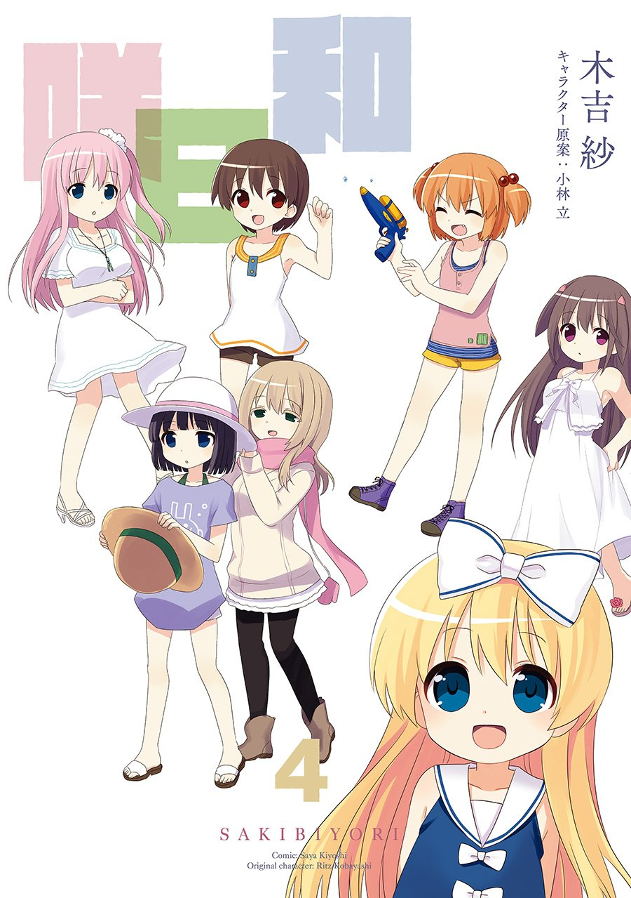
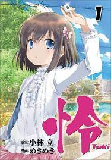
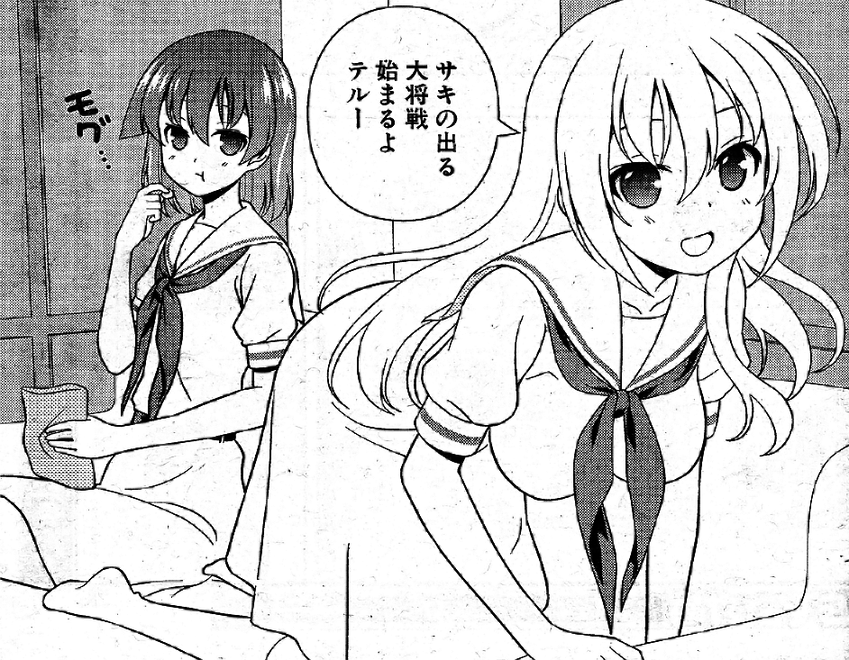
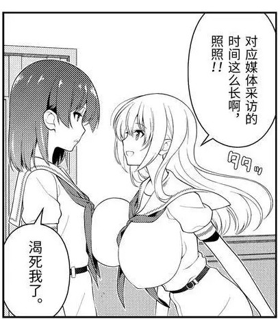
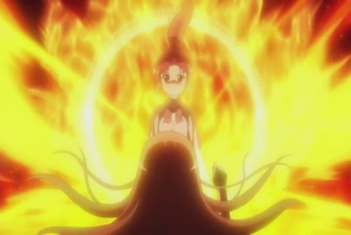

天才麻将少女
天才麻将少女，漫画原名咲-saki，是由小林立创作的热血漫画，并且从2006年连载至今。相信多数人会看这漫画都是因为这漫画是以麻将为主题，包括我，当初看封面真的没有想看欲望,

只是抱着一些好奇看看麻将要怎么画才勉强看看，谁知就看到一发不可收拾。真的是个让人时不时回来回味的漫画，但每次看的时候总是能看到很多没注意到的地方。目前剧情是全国大赛决赛的中坚战刚结束，不要问我为什么17年过去了大赛还没结束。首先小林立更新时间虽然说是一个月更新两章，但他延更次数不少，也不是不能理解，因为人物众多，每一局的麻将和分数都得仔细安排。不仅如此，除了天才麻将少女之外还推出了许多番外，如
天才麻将少女阿知贺（从奈良角度一步步打到决赛），
咲日和（小日常）

怜（这个我最期待的，很甜，全程很像在谈恋爱）等等。

主线和其他热血漫画一样明确简单，就是一群高中生以全国麻将大赛冠军为目标在前进。那为什么那么吸引人呢？首先是
画风
漫画的画风是一般的热血漫画风格，一开始确实蛮好的，只是后面越来越歪了。
它是从这样

到这样（明明在那个世界还没有过几天）

但为了看到夺冠的那一瞬间，我们还是会含泪看完的。
世界观
小林立（作者）好像说过这个世界的角色剧中的同性恋大概有一半以上，包括已婚者，其中又有2成是双性恋，超过一半以上的登场人物都是女生和女生透过iPS细胞生的小孩，还有那个世界同性也可以结婚。
重点来了所有人包括妈妈或奶奶都是处女！！！百合党的这里这里。
人物角色
我非常喜欢人物众多的故事而且每个人都有属于她们的故事和魅力。可以看到天麻每个人都有她们打麻将的理由，都在为冠军而奋斗。真正让人印象深刻的是人物的能力，简直就像魔法师打麻将的样子哈哈哈哈。
（绝对不是喷火）

颜值就不用说了，个人建议漫画和动漫都要看，动漫的人物看起来比较顺眼，而且声优的声音配上每个角色都很好，看起来更生动了。除此之外，人们常常说线索就藏在细节里，角色的名字往往都对应着他们的能力，像主人公saki，名字就有开花的意思，能力就是岭上开花；toki，名字有时间的意思，就有未来视的能力。还有其他，往后可能会写一篇关于人物的文章。
最后最后，说实话这漫画不管是从故事情节到人物都非常吸引人，尤其是偶尔的撒糖，
.png)
真是让人欲罢不能。不过除了越画越大的奶子，明明那么热血，而且还是麻将，本来还想邀请家人一起观看的......
*这里还有个私心安利，【咲MAD】-Her World-，从剪辑到音乐都很完美，很佩服他能把音乐和画面卡点融合到那么好。而且有看过天麻的人，看着影片会像重新回顾天麻一样。